LET'S REVISIT

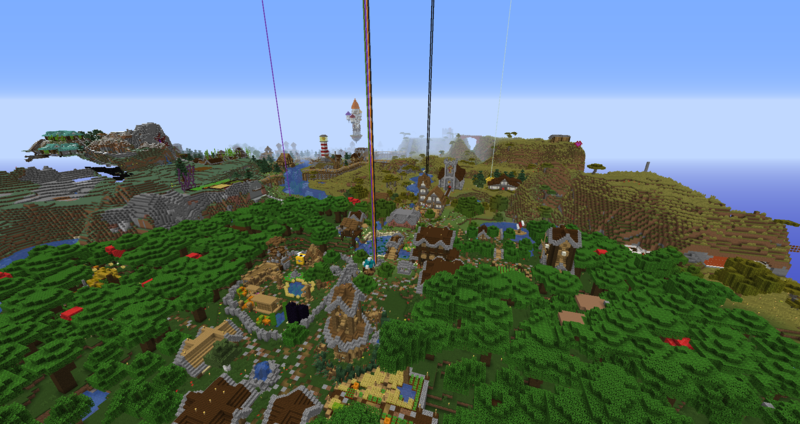
It all starts at Spawn
Spawn was situated at world spawn, where a small town was established. Early buildings include the Hotel, villager trading market and museum. Spawn was named Solanum by Eternaldoom, late in the season.
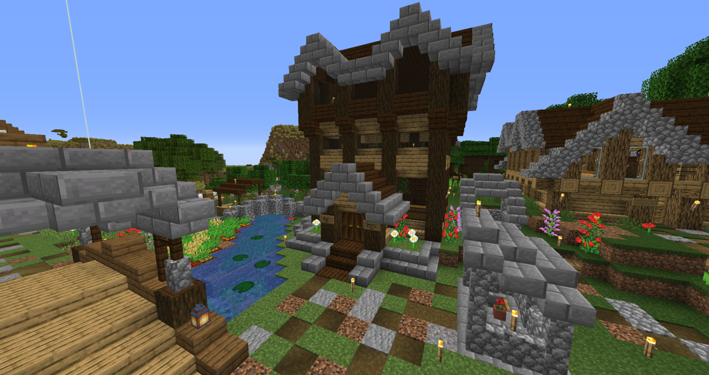
Solanum Hotel
Built by Robsoni and renovated by Crutionix, the Solanum Hotel was the first building on the server. It served as the point of access to Solanum from the Nether, as well as early enchanting and anvil access.
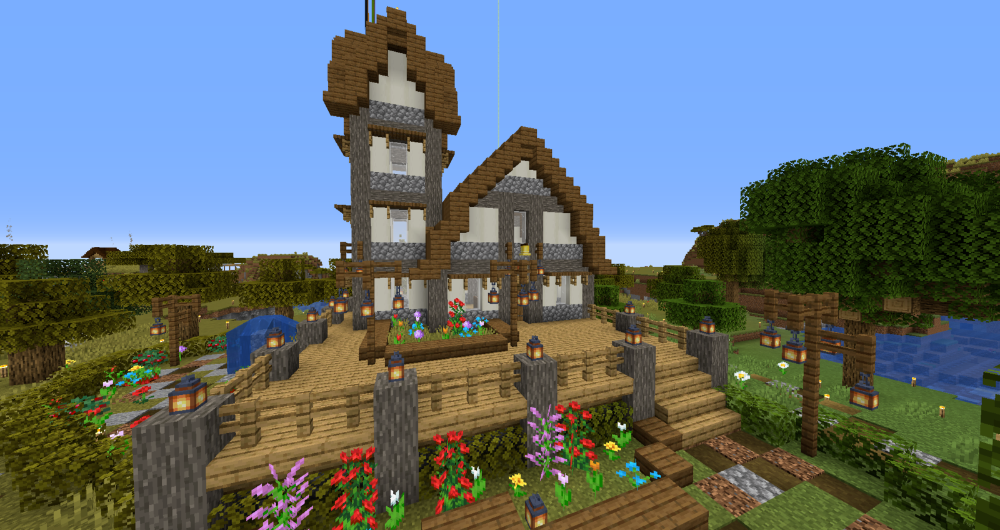
Solanum Town Hall
Built by Crutionix, the Solanum Town Hall was built to allow players to teleport to in-game events during their duration. It was often decorated seasonally in accordance to events.
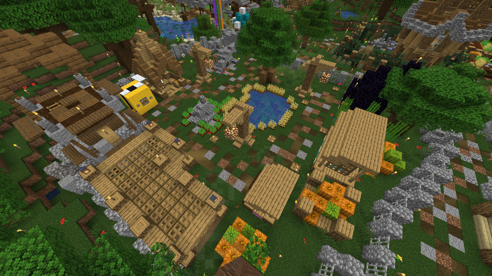
Solanum Community Market and Mall
Built by Crutionix and H4v0c21, originally designed to be a villager trading hub, the Solanum Community Market would grow to include an underground mall filled with player owned stores offering unique and different goods for players to purchase.
The mall was made up of small spaces that could be easily decorated. At the end of the season there was 21 player owned stores and the Crutio Corp department store that offered products of all different types after Crutio Corp acquired Rock Hard and created manufacturing facilities at its headquarters.
The global currency was Diamonds, however, some stores did accept payment in non global currency - noteably Mewffin's Baked Goods, which accepted iron ingots for some of it's less valuable items.
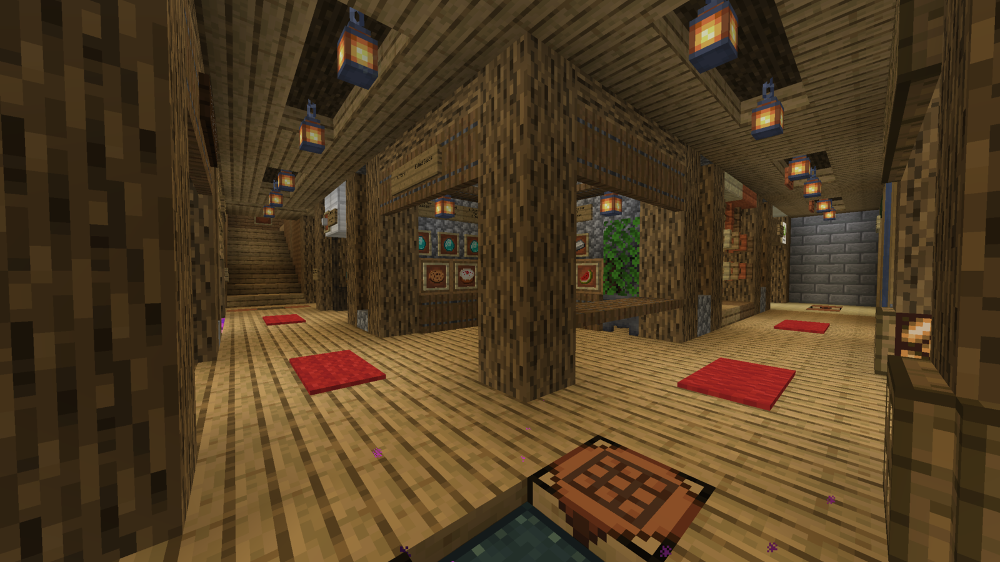
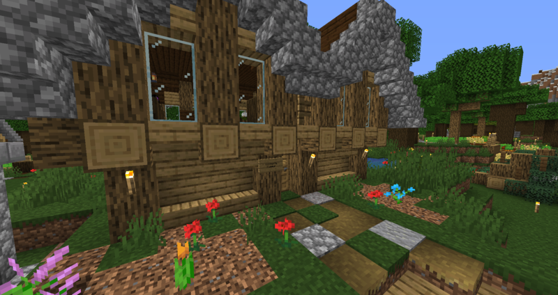
Solanum Museum
Originally built by H4v0c21 out of end blocks to showcase the dragon egg, the Solanum Museum was revamped and redesigned during the Solanum Improvement era of the server. The museum housed many different displays including the dragon egg. A screenshot of the original museum can be seen below, in a screenshot documenting the Griefing event:

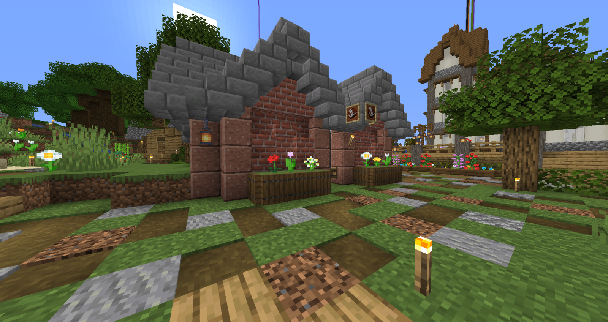
Solanum Post Office
The Solanum Post office was built to replace a defunct and derelict early starter home. It was built by Crutionix and contained mailboxes for each player that was actively playing on the server. There were a number of post office mailboxes on the first floor, but most were in the basement floor. The mailboxes contained redstone circuitry that would light up a redstone lamp, placed above the mailbox, when there was mail detected.
There was a significant junk mail issue sparked by Novahawk12, noteably affecting Mewffin, resulting in several "No Junk Mail" signs that would be ignored regardless.

Community Super Smelter
Originally built by H4v0c21 and revamped by FriedOrange79, the community super smelter was capable of mass smelting items at an impressive rate. It used kelp blocks as fuel, which were delivered to the farm via minecart on an autonomous system but required manual crafting.
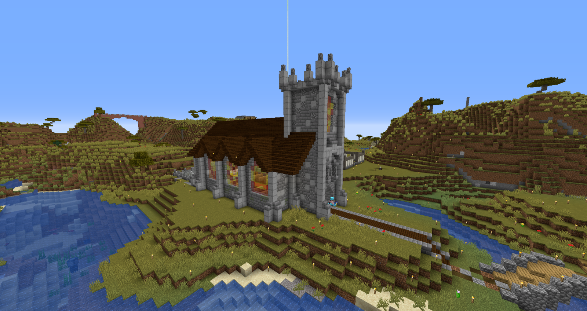
Church of Robsoni
The church of Robsoni was a large church that bordered Solanum. It was renovated and completed by Crutionix later in the season. An early screenshot of the Church can be seen below:
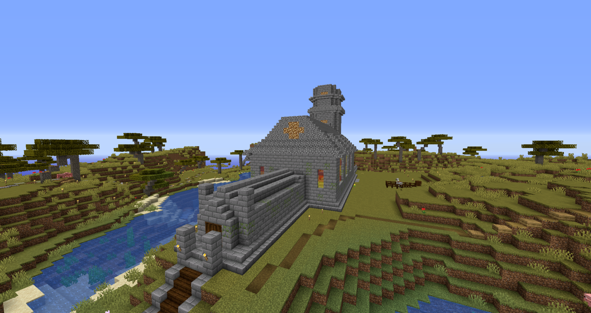

Ruleskeid
Ruleskeid was the name of the village closest to Solanum. It was built by Crutionix. It was built in the Acacia biome, but started in the Oak Forest biome bordering it. It includes Crutionix's starter base and many of the buildings were done on livestream.

Ruleskeid Wizard Tower
The wizard tower of Ruleskeid was built on a floating island that featured a removed chunk of land underneath, implying it had been once grounded. The tower includes armour stands of Novahawk12, as well as potion brewing supplies and equipment. It was largely decorative and was built on stream to almost 50 viewers.

Crutionix's Starter Home
Built by Crutionix in his earliest days on the server, his starter house would remain his primary residence for the majority of his time on the server before moving to the Mewffin Isles. He would however, return to this base before the end of the season.
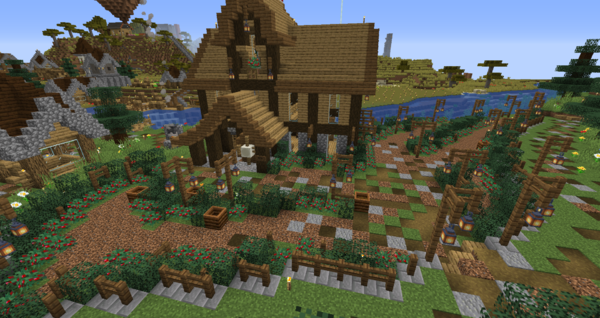
Ruleskeid Winery
Built on stream, the Ruleskeid winery was a favourite among the neighbours. It bordered the path between Mewffin Farms and the rest of Ruleskeid, offering travelers on foot a view of a water wheel and sprawling vineyard on approach,
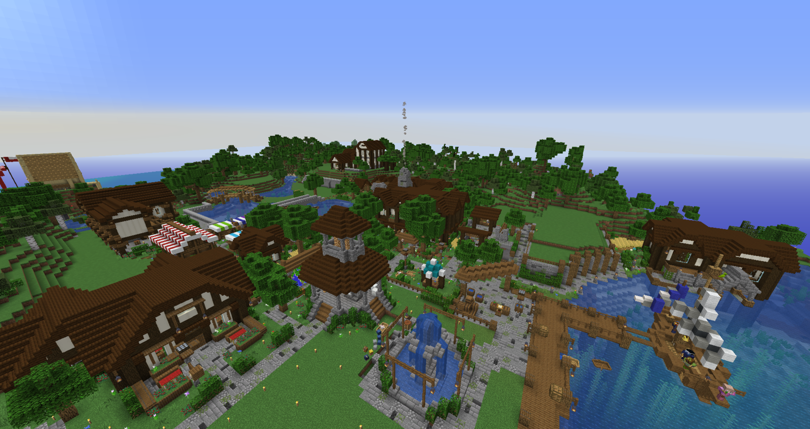
The Mewffin Isles and Onyon Bay
The Mewffin Isles is a landmass (co-incidentally not an isle) that is the de facto second spawn for the server. It was founded by Mewffin on the 28th of July, 2019 and was set to be the new base for Mewffin due to it's ocean-side scenery.
Upon returning to the server from a brief hiatus, Mewffin decided that she would venture away from her previous bases in search of a new place to establish and call home. OnyonSwomp also felt the need to do this and they began searching for a new location to build.
The Mewffin Isles was founded by Mewffin and construction began immediately. Since they did not bring many items with them, a nether portal was established with help from Crutionix and Eternaldoom who visited the Isle to deliver Obsidian and a flint and steel. Upon running out of rockets, Crutionix decided he would build a holiday home and then craft rockets to fly back to Solanum.
The Mewffin Isles
The main village at the Mewffin Isles was simply named "The Mewffin Isles". This location housed the town nether portal which would be used by those that lived in the area. It featured a villager trading market, a polling booth, a restaurant, a dock and several town houses.

Crutionix's Mewffin Isles Base
Originally designed to be a holiday home, the Crutionix base at the Mewffin Isles quickly became a primary residence. It would continue to grow, with the establishment of the Iron Farm that would become one of the largest and most detailed server buildings. Other notable constructions include the boats built by OnyonSwomp.
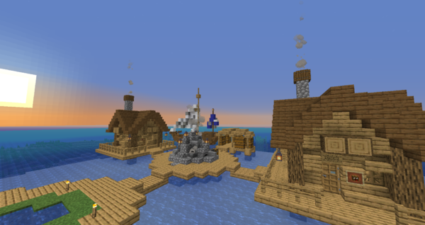
Onyon Bay
The ocean next to the Mewffin Isles was founded by OnyonSwomp and named Onyon Bay. Onyon Bay features a series of houses that are connected with boardwalks. There was also a ship that featured fisherman villagers. There were breif plans for Eternaldoom to construct a ship in the area, however, this was never completed.

Red_Ddawn's Tree House
Built by Red_DDawn, their tree house was a small flight away from Mewffin's primary Mewffin Isles residence. The tree house featured many surrounding farms and was notoriously broken into by Crutionix by any means except for the door entrances.

Legend:
S: Solanum
G-S: Greater Solanum
MM: Mewffin Manors
RKD: Ruleskeid
CC: Crutio Corp
Greater Solanum
There are many bases and buildings that were considered a part of Greater Solanum, the area surrounding spawn. Ruleskeid was one of these locations. Also included in Greater Solanum are the following bases:
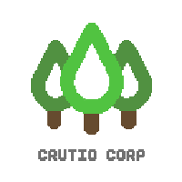
Crutio Corp Headquarters
Crutio Corp was a project by Crutionix that involved creating various different production facilities, including a concrete maker, storage warehouse, gunpowder farm, sugar cane and bamboo farms and more.
The goods produced at Crutio Corp HQ would be sold at the Crutio Corp department store in the Solanum Mall.
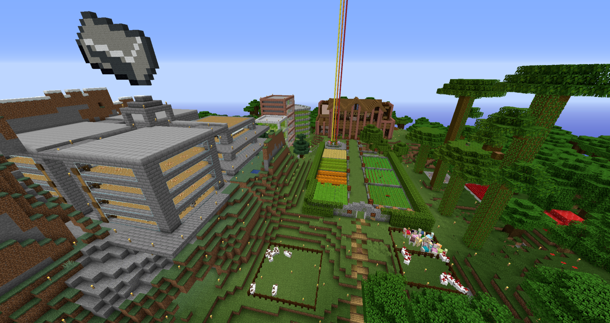
FriedOrange Estate
The FriedOrange Estate was the primary residence of FriedOrange79 and was situated several hundred blocks from Solanum, and just a short walk from Ruleskeid. It consisted of a primary residence, a decorative farm as well as a villager trading tower, iron farm, villager breeding facilities and other redstone farms. It was situated partially in a dark oak forest.

Portugal
Built by Eternaldoom, "Portugal" was built based on the Portuguese architecture found in the game Age of Empires. The buildings are recreated to look like buildings that can be found in game when playing as the Portuguese. It features several farm plots, a town centre, houses, a lumber yard, a Feitoria, and several other iconic buildings from the franchise.
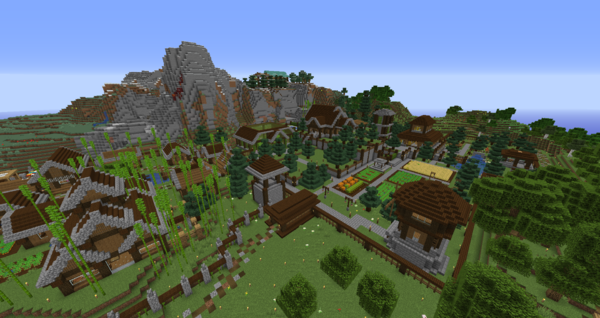
Mewffin Manors
Shortly after finalising her starter base, Mewffin retired to a location on the other side of Crutionix's Ruleskeid and settled down with a series of farm buildings. This would be known as Mewffin Farms and Mewffin Manors for the rest of the season.

Holiday Hills
Built between Mewffin Manors and Solanum, the Holiday Hills village set the stage for the 2019 Holiday Event, which included a Secret Santa and Snow globe decorating competition. The village consisted of the comically large sheep that housed sheep that were coloured in event colours.
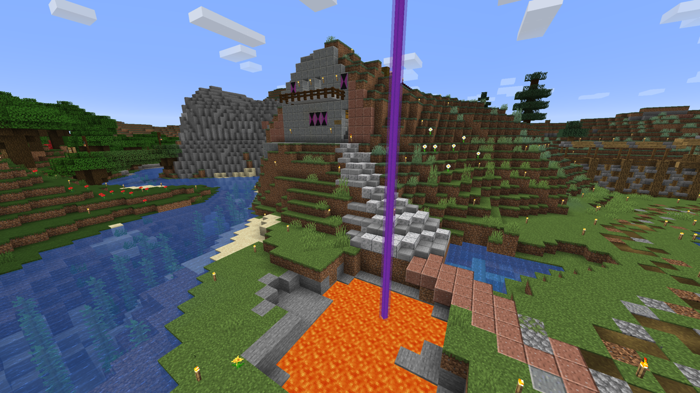
Glowe6958's Home
The recurring Picasso house of Glowe6958 would return with TBP Season One, and would be one of the earliest established homes on the sever. Along the path to Mewffin Manors and Ruleskeid, Glowe's hillside home would feature a squid parkour shrine as well as a series of hidden rooms and passages.
Riff__Raff__'s Base
Riff_Raff was generally considered one of the most talented builders on Season One. She created a village south west of Solanum in a forest biome that bordered the southern side of the desert, containing the first mob farm. The village is split into two different sides, with completely different styles. Half of the village was filled with cottages, surrounding a giant lake. The other side was a desert inspired expansion featuring middle eastern architecture cues. The desert side of the village bordered Portugal and was a favourite among server enthusiasts.

Glowe6958's Home
The recurring Picasso house of Glowe6958 would return with TBP Season One, and would be one of the earliest established homes on the sever. Along the path to Mewffin Manors and Ruleskeid, Glowe's hillside home would feature a squid parkour shrine as well as a series of hidden rooms and passages.

Glowe6958's Home
The recurring Picasso house of Glowe6958 would return with TBP Season One, and would be one of the earliest established homes on the sever. Along the path to Mewffin Manors and Ruleskeid, Glowe's hillside home would feature a squid parkour shrine as well as a series of hidden rooms and passages.
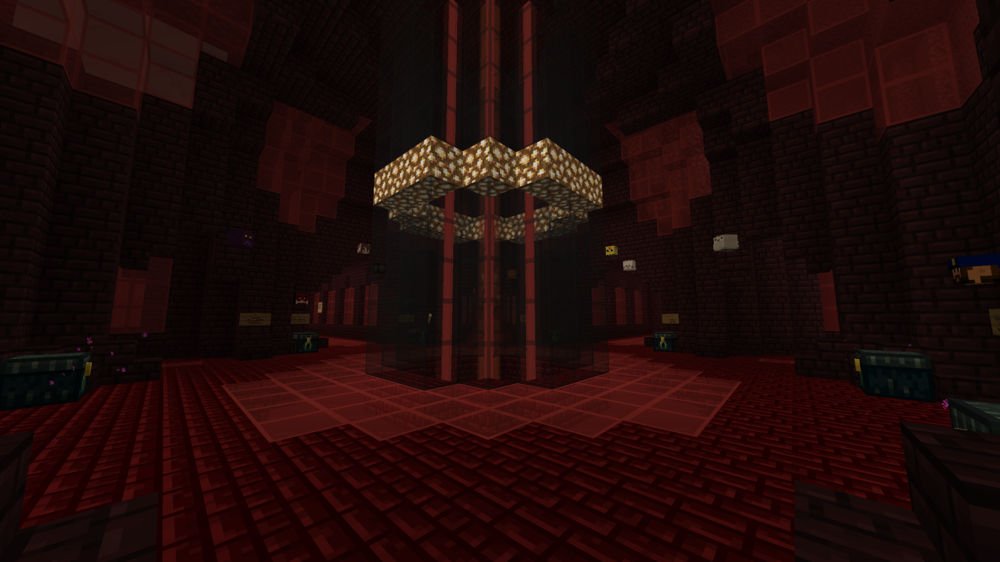
The Nether Hub
Built as a community effort primarily by H4v0c21, FriedOrange, Mewffin and worked on later by Crutionix and Blupee, the season one Nether Hub was a marvel of nether brick and glass, that is often looked at as one of the best Nether Hubs.

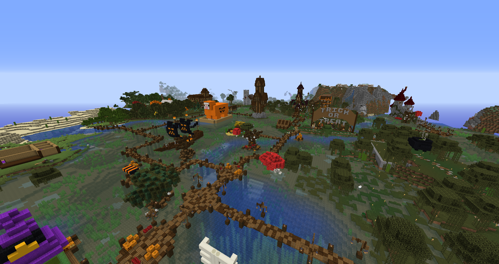
Halloween Town
Setting the stage for the 2019 Halloween Event, The Halloween Town village was built in a swamp biome and consisted of rickety boardwalks throughout the swamp. For the entirety of October, players were invited and encouraged to participate by building in the area. The area also included a scavenger hunt, a "Trick or Treat" rollercoaster, a comically large sheep filled with sheep of the event colours and a free event-to-spawn teleport. Construction of the basic infrastructure, custom trees and board walks were undergone by OnyonSwomp and Crutionix in the September prior to the event.